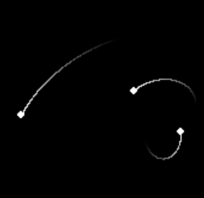

Inspired by the unsolvable 3 body problem, I wanted to make a nice visual representation of particles affected by a gravity. This one took me way too long to make, one of the problems was a silly minus sign that made everything move away from everything else and the rest goes to incompetence. The following shows how to make stuff in the program and which keys do things.

11/03/2023
So I made a little update, I was curious lately about what would happen if I changed the equation which determines the force between the two particles and I managed to stumble upon some which have some interesting effects. Now if you press the keys 1, 2, 3 or 4, the force the particles will feel will be changed as the program is running. The following are the differnt equations for force which i found interesting Each F sub i corresponds to the key pressed. $$ { F_1 =\frac{G m_1 m_2}{d^2} } $$ $$ { F_2 =\frac{G m_1 m_2}{d} } $$ $$ { F_3 = G m_1 m_2 d } $$ $$ { F_4 = G m_1 m_2 sin(d) } $$ Code on github
Stuff to download